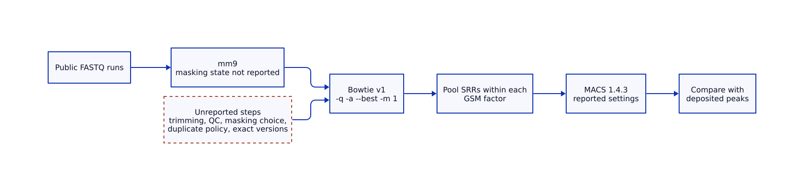
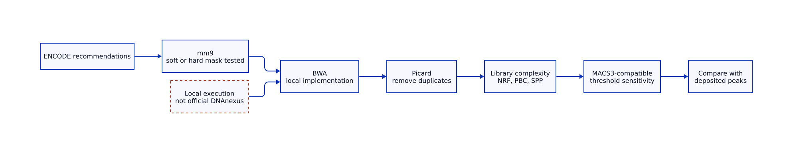
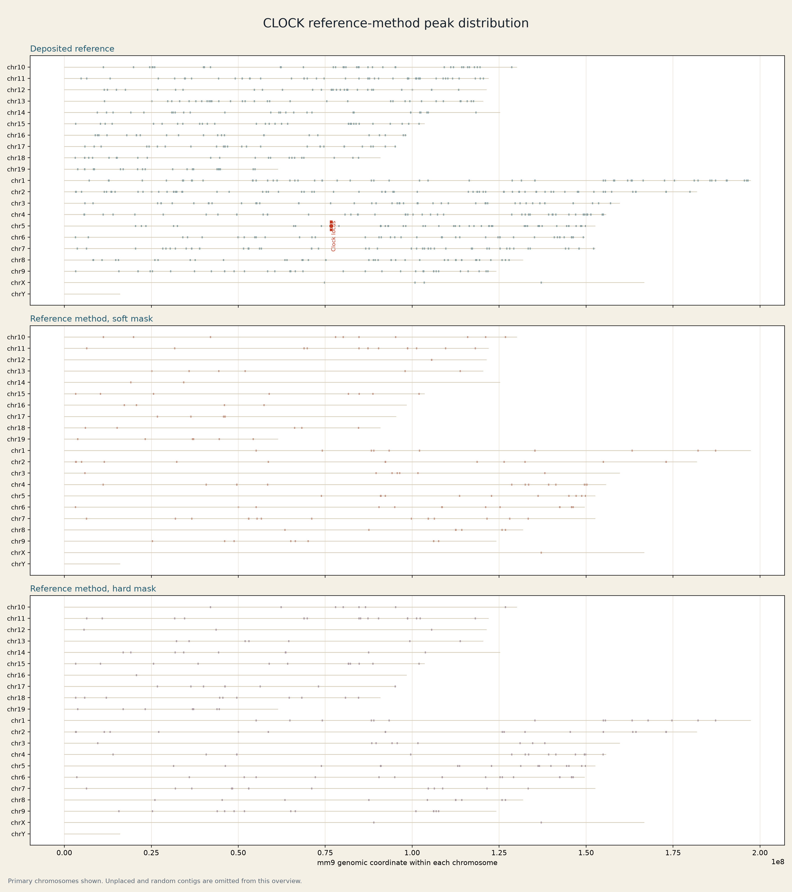
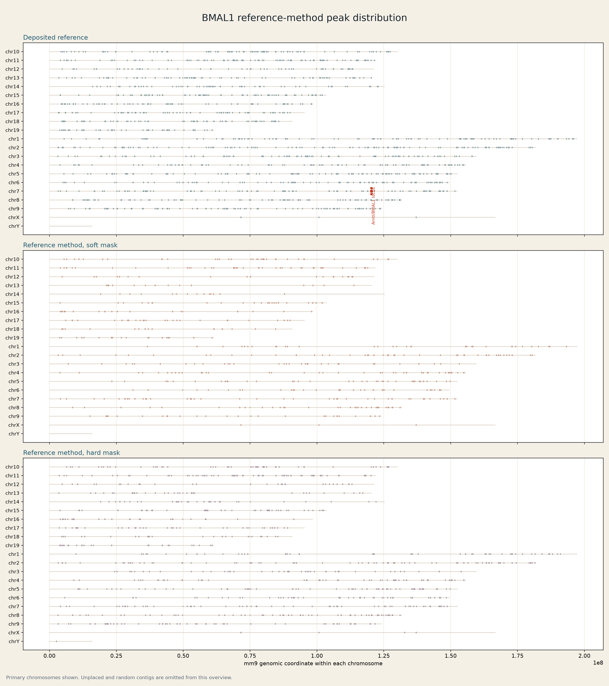
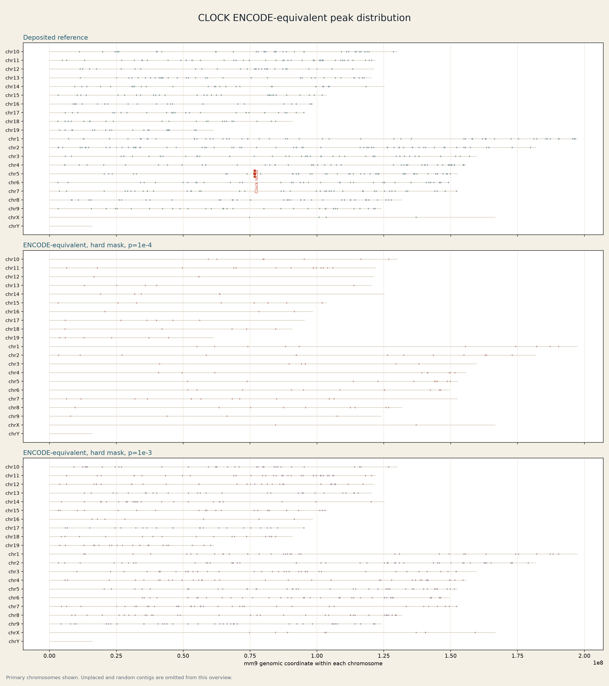
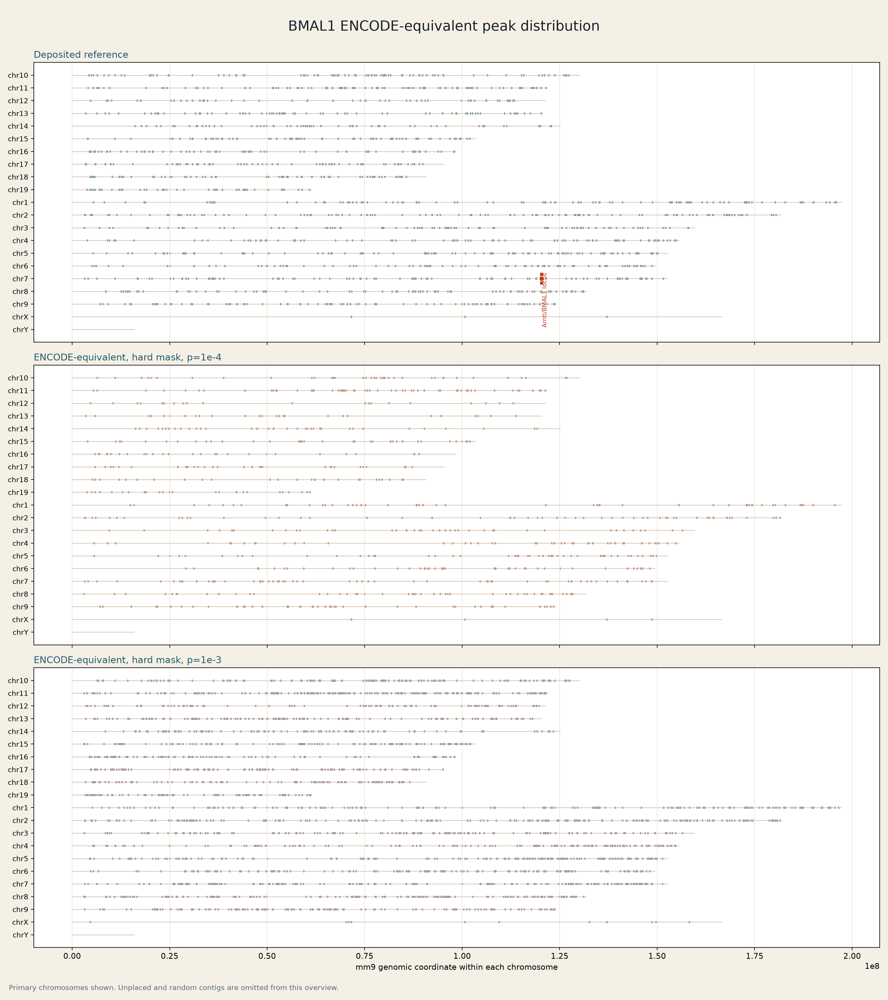

Circadian ChIP-seq reproducibility audit
A method reconstruction, sensitivity analysis, and local ENCODE-equivalent comparison for public mouse liver circadian factor ChIP-seq data.
What can be reproduced from the deposited data?
Summary
No tested condition reproduced both the deposited peak counts and peak sets.
The analysis used the public data and the method details available from the reference publication and GEO records. The full original protocol was not available. The local ENCODE-equivalent workflows were run locally and were not official DNAnexus executions.
Peak counts and overlap
| Analysis and condition | CLOCK peaks | Overlap | BMAL1 peaks | Overlap |
|---|---|---|---|---|
| Reference deposited peaks | 759 | Reference | 1,578 | Reference |
| Reference publication parameters, soft-masked | 174 | 165 | 607 | 593 |
| Sensitivity: duplicate auto | 295 | 242 | 935 | 738 |
| Sensitivity: duplicate all | 282 | 214 | 1,206 | 790 |
| Sensitivity: model 5,30 | 279 | 210 | 1,206 | 790 |
| Sensitivity: genome 1.87e9 | 279 | 213 | 1,135 | 783 |
| Sensitivity: p-value 1e-4 | 656 | 358 | 3,493 | 1,204 |
| Sensitivity: p-value 1e-3 | 2,895 | 568 | 13,869 | 1,494 |
| MACS3 compatibility, soft-masked | 128 | 56 | 361 | 313 |
| Reference publication parameters, hard-masked | 223 | 167 | 963 | 544 |
| ENCODE-equivalent, hard-masked, p-value 1e-4 | 163 | 111 | 824 | 470 |
| ENCODE-equivalent, hard-masked, p-value 1e-3 | 633 | 229 | 2,741 | 720 |
Overlap means deposited reference peaks that overlap the reconstructed peak set.
Processing diagrams
The diagrams separate reported steps from unreported steps and distinguish the local implementation from the ENCODE recommendations.



Genome-wide peak distribution
Click any plot to open it in a new window. Then click the image again to zoom in.
These plots show factor-specific ChIP-seq enrichment intervals across mm9 chromosomes. A peak can contain a sequence motif, but motif scanning is a separate analysis. A peak is not assigned to a gene unless an explicit annotation rule is applied.
Reference-method reconstruction


Local ENCODE-equivalent workflow


Workflow record
- Reference-method sensitivity workflow: 16 peak-calling tests.
- Reference-method hard-mask workflow: canonical UCSC
chromFaMasked.tar.gz. - Hard-masked ENCODE-equivalent thresholds:
1e-4and1e-3. - Raw sequencing files are not stored here. GEO and SRA accessions are recorded in the manifests.